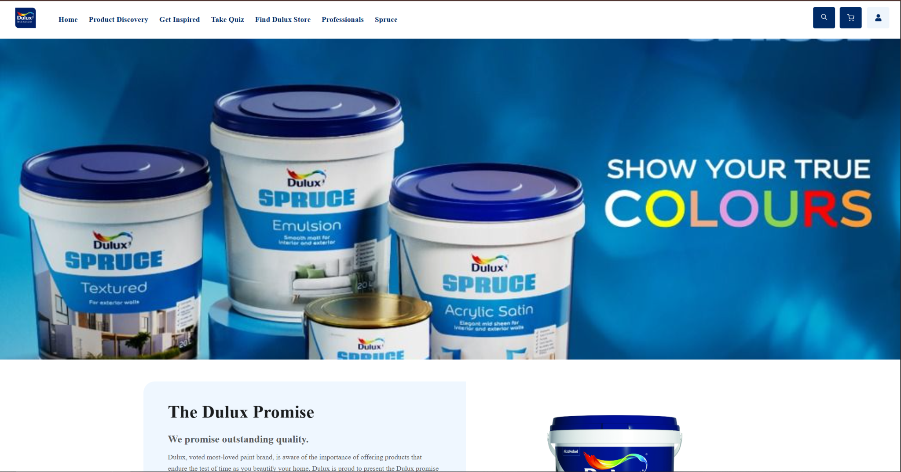

Frontend Project
LiveDulux Brand Website Clone
A responsive web application replicating the core user experience and visual design of the official Dulux website. Built to demonstrate front-end architectural precision, clean layout structuring, custom CSS styling for complex UI elements, and full cross-device responsiveness.
HTML5
CSS3
Tailwind CSS